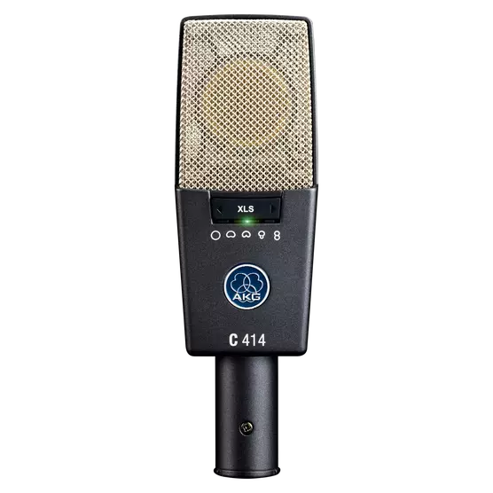

| Type | Condenser |
| Polar pattern(s) | Cardioid, Figure of eight, Hypercardioid, Omnidirectional, Wide Cardioid |
| Primary use | Instrumental, Vocal |
| Frequency Response | 20 - 20000 Hz |
| Preattenuation Pad | -6, -12, -18 dB |
| Bass cut filter | 160 Hz, 80 Hz, 40 Hz |